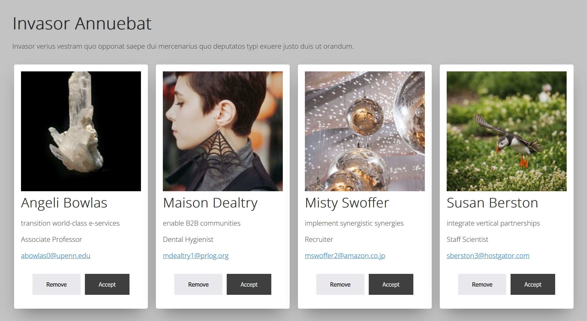
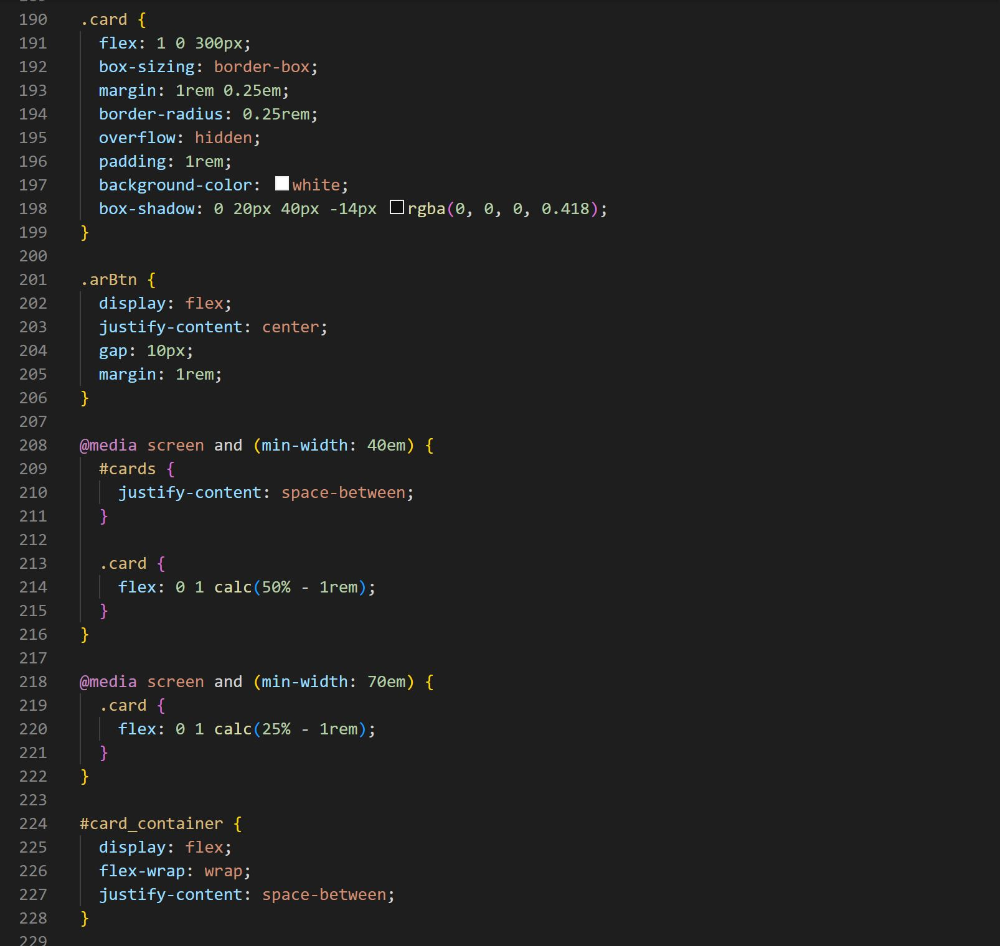

12c.01.01.-fonts-and-cards
Fonts and cards
UI-cards
For the UI cards I used flex and flexwrap. I defined that all of the cards should have the same size of 300px and with mediaqueries changing the percantage of the width so at breaking point 40em its two cards per row and on mobile its only one card. I designed the cards so the gap is 0.25em and using outer boxshadow to give the visual of a border. I made the buttons different colors, but close to each other to show they belong together but still are different.


Font hierarchy
For the font hierachy I used the major third scale and the font Merriweather for headers and Open Sans for text.
See Mockup